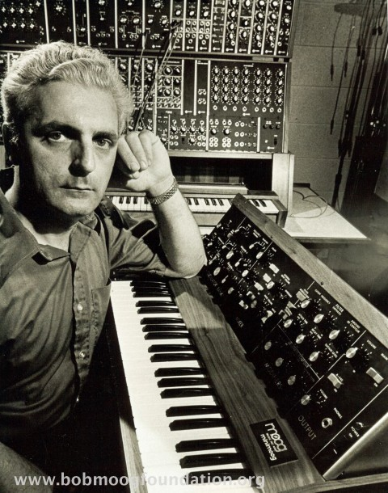

Bob Moog
The Father of Modern Synthesis
Bob Moog in his studio.
About Bob Moog
Bob Moog (1934-2005), founder of Moog Music, was an American engineer and pioneer of electronic music, best known as the inventor of the Moog synthesizer, one of the most popular hardware synthesizers of all time!
In 1953 at age 19, Moog founded his first company, R.A. Moog Co., to manufacture theremin kits. During the 1950s, composer and electronic music pioneer Raymond Scott approached Moog, asking him to design circuits for him. Moog later acknowledged Scott as an important influence. Later, in the 1960s, the company was employed to build modular synthesizers based on Moog's designs. This was the beginning of the world-famous Moog Synthesizer.
Development of the Moog Synthesizer
The Moog synthesizer was one of the first widely used electronic musical instruments. Early developmental work on the components of the synthesizer occurred at the Columbia-Princeton Electronic Music Center, now the Computer Music Center. While there, Moog developed the voltage controlled oscillators, ADSR envelope generators, and other synthesizer modules with composer Herbert Deutsch.
Moog created the first voltage-controlled subtractive synthesizer to utilize a keyboard as a controller and demonstrated it at the AES convention in 1964. In 1966, Moog filed a patent application for his unique low-pass filter U.S. Patent 3,475,623, issued in October, 1969. He is a listed inventor on ten US patents.
Moog had his theremin company (R. A. Moog Co., which later became Moog Music) manufacture and market his synthesizers. Unlike the few other 1960s synthesizer manufacturers, Moog shipped a piano-style keyboard as the standard user interface. Moog also established standards for analog synthesizer control interfacing, with a logarithmic one volt-per-octave pitch control and a separate pulse triggering signal.
The first Moog instruments were modular synthesizers. In 1971 Moog Music began production of the Minimoog Model D, which was among the first synthesizers that was widely available, portable, and relatively affordable. The first prototype of the minimoog only had about two filters, two envelope generators, and a very small keyboard. Robert knew that this wouldn’t be good enough for the average musician, so he kept working on the synthesizer and was able to add more filters, oscillators, and a wider key range.
His Legacy
Moog's awards include honorary doctorates from Polytechnic Institute of New York University (New York City), Lycoming College (Williamsport, Pennsylvania), and Berklee College of Music.[10] Moog received a Grammy Trustees Award for lifetime achievement in 1970. In 2002, Moog was honored with a Special Merit/Technical Grammy Award. Moog also received the highly regarded Polar Music Prize in 2001.
Finally, the Bob Moog Foundation was created as a memorial, with the aim of continuing his life's work of developing electronic music.